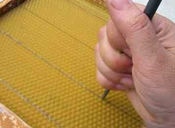
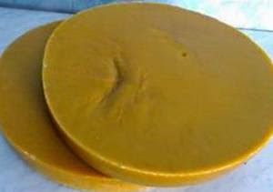

 Як і багато корисних речей, ненатуральная вощина вперше з'явилася в Германії. Німецькі бджолярі придумали спосіб, як гарантувати собі збільшення медового урожаю. Німецький пасічник Іоганесс Мерінг з селенію Франкенталь придивився до дощок для випічки вафель.І він дуже йому придивилися ці нехитрі пристосування. Він став друкувати за допомогою пари дощок штучну вощину в потрібних йому об'ємах. Перший млинець у нього вийшов грудкою. На перших зразках не було підстав для стенів майбутніх стільникових вічок. Йшов 1857 рік. Але через чотири роки хтось Вагнер пішов далі. Він узяв за основу вощину розробки Мерінга і додав до неї те, що бракувало - стіни для стільникових вічок. У виграші залишався і сам бджоляр, і бджоли, яким треба було менше енергії витрачати на будову сотів. У них вже був деякий запас воску для будівництва. Вагнер винайшов і апарат для здобуття вощини його малюнка. Це були елементарні вальці з нанесеним гравіюванням малюнком. Аркуш воску пропускався між ними і набував потрібного малюнка. Після цього до справи підключилися заповзятливі американські пасічники. вони стали в 1866 році робити вощину за прикладом Вагнера вже в більш-менш широких масштабах. Зразки все ще були грубуваті. Але недовго. У 1876 році механік із США Уошберн створив зі своїм другом Рутом вальцювальну машину, яку удосконалили жителі Нью-Йорка містери Дунхем і Вандеворт. З того часу (1878 рік) вощина стала просто чудовою до загальної радості пасічників всього цивілізованого світу. Технічний прогрес все прискорював свої кроки. Д.Е. Ван Дейзен допрацював машину для вироблення вощини з дуже тонким дротом і з абсолютно плоскими підставами для вічок. Останні дозволили застосовувати дріт, стоншили саму вощину. Новим словом став прес містера Гивена, оснащений плитами з гравіюванням. Але насправді цей прес не був економічним - було потрібно для його роботи надто багато витратного матеріалу, віск. Багато воску на дні вічок залишався і при створенні вощини на пресах німецької фірми Рітша. Технологія вироблення аркуша вощини до початку 20-го століття залишалася в принципі незмінною. Тонку дошку опускали в рідкий гарячий віск, потім швидко переставляли у воду низької температури. Чим більше було занурень, тим товще виходив аркуш. Великим недоліком було те, що аркуш вощини внизу виходив з потовщенням. Розробники штучної вощини витратили немало сил для того, щоб налагодити випуск листів в рулонах. У Росії такі рулони з'явилися вже в 1880-х роках. Завдяки розробкам бджолярів півдня Росії. У 20-х роках пошуки найкращого способу створення вощини продовжувалися. Бджоляр А.І. Рут пропонує прес для вироблення плоскої вощини з основою з дерева. Подібна вощина, як і інші її зразки, на дерев'яній підставі вийшла украй невдалою, оскільки бджоли вигризали віск до самої деревини. Сьогодні окрім вощини із стандартним вічком випускається також вощина трутня, розрахована на формування великих вічок трутнів. Встановлюючи у вулик рамки з такою вощиною, бджолярі зазвичай позначають їх як на верхньому бруску рамки трутнів. Така вощина застосовується для полегшення видалення розплоду трутня їз вуликів.

При древніх російських царях і князях воском платили дань і мито. Захотіли, скажімо, ви перебратися з одного князівства в інше,
давайте на прийом до спеціального боярина, який завідував постачаннями і зберіганням воску при дворі государя. У Древній
Русі бджільництву надавали дуже багато значення. Всі бортникі повинні були частину воску віддавати княжій дружині при
полюдье, коли поповнювалася казна князів.
З воску робили найдорожчі -- церковні свічки. Його застосовували для лікування хвороб і для виплати державних боргів.
Можна сміливо сказати, що віск створив Росію як велику державу. Тому як споконвіків російські експортери воску платили
величезні податки в казну.І на восковому промислі неабиякою мірою трималася могутність Новгорода і Пскова -- торгівельних
республік, що продавали російський віск до Англії і Франції, Голландії і Німеччини. навіть на початку 19-го століття
експорт воску залишався одній з ваговитих складових російського експорту.
Попорпавшись в літературі, можна відшукати різні цікаві факти про віск і його складові. Як біологічно активна речовина віск,
природно, знаходить собі широке вживання в різних сферах діяльності людей. Обумовлені висока біологічна цінність меду
великою кількістю ефірів, кислот, вуглеводнів, ароматичних масел, мінеральних речовин. У натуральному воску до
трьох сотень всяких хімічних сполук.
До воску домішуються продукти життєдіяльності бджіл. Прополіс, пилок, смоли -- все це в тій чи іншій мірі знаходиться у воску.
До речі, наявність домішок і додає воску різний колір. Зустрічається залежно від складу віск:
- майже безбарвний,
- яскраво-жовтий,
- коричневий,
- бурий.
В хорошого воску запах чудовий, приємний, медовий. Помнеш такий віск в пальцях, шкіра довго пахне літом і пасікою.
Примітно, що віск виробляють бджоли в самому працездатному віці. Коли бджолі від 11 до 20 днів від народження, вона і
виділяє із спеціальних залоз на своєму черевці віск. З нього і будують бджоли соти.
Знахарі народної медицини робили з воску пластири, які витягували гній, зменшували запалення ран. Та і офіційні
фармацевти, медична промисловість не стороняться воску. Виробляються на основі натурального бджолиного воску мазі -
цинкова, свинцева, спермацетова. всі вони допомагають боротися із запальними процесами в організмі.
Для косметології віск корисний своєю здатністю швидко проникати в клітки шкіри. Після косметичної маски з використанням
воску шкіра стає гладкою і пружною. Косметичні маски легко приготувати в домашніх умовах, потрібний лише якісний віск
з пасіки, розміщеної в екологічно чистому місці.
А ось ще дещо з різних цікавих фактів про віск. Виявляється, щоб виробити кіло воску, бджолам потрібно спожити до трьох
з половиною кілограмів чистого меду. І ще додатково до ста грамів пилку. За змістом вітаміну А віск перевершує навіть
знамениту морквину. Добре жувати віск для зміцнення ясен і зубів, вітамінізуючи порожнину рота.
У сотні грамів воску понад 4 грами провітаміну А. У такій же кількості моркви лише 0,01грамма. Врятує віск і від згубної
звички диміти табачищем. Можна жувати віск замість жувальної гумки, що відверне організм від пристрасті до нікотину.